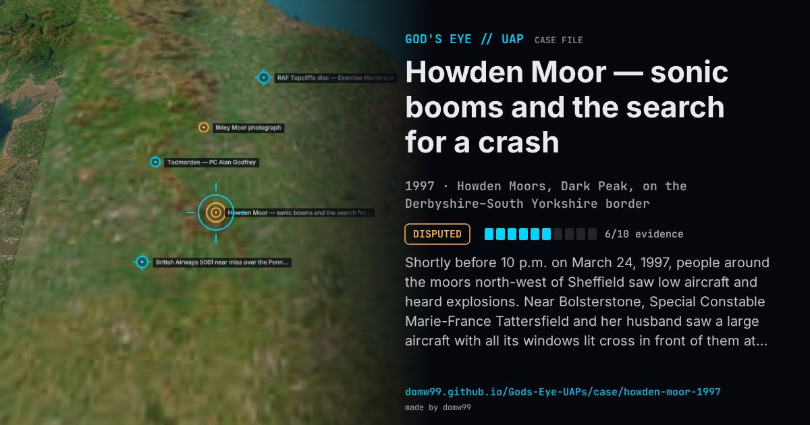

Howden Moor — sonic booms and the search for a crash

Shortly before 10 p.m. on March 24, 1997, people around the moors north-west of Sheffield saw low aircraft and heard explosions. Near Bolsterstone, Special Constable Marie-France Tattersfield and her husband saw a large aircraft with all its windows lit cross in front of them at no more than about 500 ft; a farmer saw a low plane head towards the moor, then an orange glow and plumes of smoke; gamekeepers heard “a terrific explosion”; others described a dark triangle or two red lights. Seismic and acoustic instruments of the British Geological Survey recorded two sonic events, at 21:52 and 22:06. Fearing an air crash, South Yorkshire Police led one of the largest searches in the region’s history: police and RAF helicopters and about 141 mountain-rescue volunteers searched up to 50 square miles of moorland for some 15 hours and found nothing. The Ministry of Defence first said no RAF aircraft was responsible, then admitted that six Tornados had been on low-flying training until 21:30, denied that any had gone supersonic, and closed the case after an RAF Police inquiry with “no military link”. The booms remain unattributed.
Explanation
The British Geological Survey said the recorded signal was atmospheric, not an impact, and most likely a supersonic aircraft. The MoD admitted a low-flying exercise by six RAF Tornados that it said had ended at 21:30, and denied any supersonic flight; an RAF Police inquiry in 1998 found no military link and suggested a natural cause such as a re-entry. The researcher David Clarke argues that a covert military flight continued after the exercise.
What was seen
Shape: A large low aircraft with lit windows, a dark triangle, two red lights, then an orange glow and smoke
Witnesses: A special constable and her husband near Bolsterstone, gamekeepers, farmers, a Peak Park warden and others
Duration: Booms at 21:52 and 22:06; a 15-hour search
Sources
- The National Archives (UK) — MoD UFO files
- David Clarke — The Howden Moor incident
- David Clarke — Moorland UFO mystery revisited
Browse
- United Kingdom
- 1990s
- Disputed
- Mass sightings
- Official government documents
- Many independent witnesses
- Police witnesses
- Infrared or other sensor data
- Lights and fireballs
- Triangles and V shapes